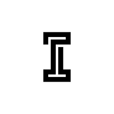

URCE
Human-worn passive signature conditioning intended to disrupt stable thermal contour at source.
CONDITION
ÍBERA SYSTEMSÍBERA SYSTEMS / TERCIO
A passive-first, modular survivability architecture for dismounted teams facing thermal ISR, FPV and fibre-optic FPV pressure.
01 / THE OPERATIONAL GAP
Thermal surveillance, short-range FPV attack and fibre-optic control compress the time available to dismounted teams while reducing the usefulness of RF-only detection and jamming.
Many counter-UAS solutions remain too centralized, too active or too expensive to be carried, dispersed and lost at the tactical edge. TERCIO addresses that gap through layered, standalone-capable functions rather than one mandatory sensor, network or interceptor.
02 / TERCIO
Each layer provides bounded value on its own. Integration is intended to improve effectiveness, but no single layer is a mandatory point of failure.
Human-worn passive signature conditioning intended to disrupt stable thermal contour at source.
CONDITIONAlways-on, non-powered position concealment and residual-effect mitigation. GADIR-TB is the first demonstrator.
CONCEALLocal and cooperative early warning using complementary sensing, with useful local behaviour if disconnected.
DETECTAttritable forward or remote nodes intended to extend sensing and cueing geometry around obstacles and dead ground.
EXTENDCue-driven deception and perception shaping intended to create ambiguity and divert attention.
DECEIVE03 / PHASE A
GADIR-TB is the only committed demonstrator in TERCIO v1.0. It is a test article, not a finished product or field-ready solution.
Candidate material and air-gap configurations with a repeatable uncovered reference.
Controlled LWIR protocol covering steady state, transients and representative view angles.
Raw imagery, ambient conditions, setup geometry and comparative analysis.
Usability and risk observations: visual/NIR cueing, wind, moisture, heat, abrasion and flame response.
A clear proceed, pivot or stop decision.
04 / EVIDENCE DISCIPLINE
TERCIO is not combat-proven, fielded, manufactured or validated. No detection range, warning time, thermal-contrast reduction, casualty reduction or unit-cost figure is claimed.
05 / IP & TRANSFER FRAMEWORK
Indicative partnership framework — final programme route, workshare, rights and transfer terms remain subject to due diligence and written agreement.
ÍBERA background IP remains protected. Qualified partners receive the rights required for the agreed evaluation and test scope.
Foreground IP, technical authority, workshare, cost share and manufacturing rights are defined according to actual contribution and programme route.
Ukraine-first production, licence, assignment or transfer terms are established through a definitive written agreement.
No third-party dependency has been identified in the present concept baseline. Formal prior-art, freedom-to-operate, export-control and contractual reviews remain pending.
NDA · evaluation agreement · memorandum of understanding · workshare agreement · definitive licence or transfer agreement.
06 / PARTNER WITH US
CURRENT ASKWe are seeking a qualified French–Ukrainian development lead or consortium able to convert one tightly scoped demonstrator into credible evidence and a viable route to Ukrainian-led validation and production.
Request a 20-minute triage callTextile, coated-material or deployable-structure engineering.
Credible test design, instrumentation and evidence.
Operational advice, manufacturing feedback and adoption pathway.
Legal applicant and AID / BRAVE France eligibility route.
07 / ABOUT ÍBERA SYSTEMS
ÍBERA Systems is an independent Toulouse-based defence innovation venture focused on passive-first, modular and cost-asymmetric survivability concepts for the tactical edge.
TERCIO is led by Francisco Javier Fernández Plaza, an aerospace and defence programme manager with more than 20 years of experience across multinational European programmes and industry.